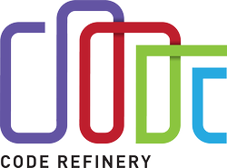

CodeRefinery in a day
{kind=link}

This course provides an introduction to essential practices in research software engineering, with a strong focus on collaboration, reproducibility, and sustainability. Participants will learn the fundamentals of version control and how to effectively collaborate on texts in GitHub. The course also explores key concepts in reproducible research, including organizing projects, a brief overview of environments and containers. In addition, it covers the social aspects of coding, such as software licensing, citation, and open collaboration. By the end, learners will know about best practices for developing and sharing research software more efficiently and transparently.
This course is a condensed version of the CodeRefinery workshop
Prerequisites
To follow the course, you will need a GitHub account: Instructions
Why is this important?
When in doubt if what you are doing is important in research, always reflect using the Allea European Code of Conduct for Research Integrity (2023)
{kind=link}
The four Allea principles are:
Reliability in ensuring the quality of research, reflected in the design, methodology, analysis, and use of resources.
Honesty in developing, undertaking, reviewing, reporting, and communicating research in a transparent, fair, full, and unbiased way.
Respect for colleagues, research participants, research subjects, society, ecosystems, cultural heritage, and the environment.
Accountability for the research from idea to publication, for its management and organisation, for training, supervision, and mentoring, and for its wider societal impacts.
Transparency and accountability from idea to publication are fundamental requirements of reproducible research. What we will cover in this course are all the necessary steps needed so that the computational/methodological/digital part of the research work is done transparently and allows others to verify and reproduce it.
However, we are not just doing this to follow research integrity principles, we are also doing this to improve how we work with other collaborators, and especially we do this to help our future self so that it can always be possible to travel back in time and see what was done at a certain part of the research process.

(Source)
Schedule
9:15-09:25 |
|
9:25-9:30 |
Intro (this page) |
9:30-9:40 |
|
9:40-10:20 |
|
9:55-10:05 |
Break |
10:05-10:20 |
|
10:20-10:25 |
|
10:25-11:00 |
|
11:00-12:15 |
Lunch break |
12:15-12:30 |
|
12:30-13:00 |
Demo - How PRs look, code review and merge, issue linking, history, branch naming |
13:00-13:10 |
Break |
13:20-13:25 |
|
13:25-13:45 |
|
13:45-14:00 |
|
14:00-14:10 |
Break |
14:10-14:20 |
|
14:20-14:35 |
|
14:35-14:45 |
|
14:45-14:55 |
|
14:55-15:00 |
The lesson
Reference
Who is the course for?
This course is for you, if you are in a position where you might want to support researchers with programming and its reproducibility.
This course is not designed for “professional software engineers” or to make you one.
About the course
In this course, you will get a quick overview of tools and best practices for research software development. This course will not teach a programming language, but we aim to show you some tools and techniques to be able to guide researchers to do programming well and avoid common inefficiency traps. The tools we teach are practically a requirement for any researcher who needs to write code. The main focus is on using Git for efficiently writing and maintaining research software or other content.
See also
All lessons of a full CodeRefinery workshop
You can also find recordings of the full lessons on Youtube:
Version Control: Intro pt 1 , intro pt 2, collaborative version control
Full playlist on youtube, inlcuding also Documentation, Jupyter, modular code develeopment and automated testing.
Credits
The CodeRefinery contributors for lessons introduction to version control, collaborative git, reproducible research and social coding.